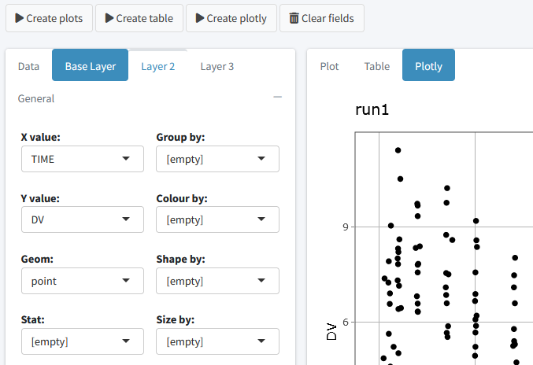

Getting started
To get started, first all relevant packages need to be installed,
e.g.:
# For development versions
devtools::install_github("richardhooijmaijers/shinyMixR")
# Or for CRAN release
install.packages("shinyMixR")
# It is advised to use the CRAN releas of nlmixr2
install.packages("nlmixr2")
# It is advised to use xpose.nlmixr2 for easy diagnostics
install.packages("xpose.nlmixr2")
The easiest way to get to know the package is to start by creating
the necessary folder structure:
library(shinyMixR,quietly = TRUE)
create_proj()
By default, a folder structure is created within the current
directory, which will include some example models. It is however also
possible to create a project in any other folder
(e.g. create_proj(loc='/anypath')). The following folders
are created:
- analysis: in this folder all plots and tables are saved in a
structured way to make them accessible to the interface
- data: data files used by the models in R data format (.rds)
- models: models, available as separate R scripts according the
unified user interface in
nlmixr
- scripts: generic analysis scripts made available in the
interface
- shinyMixR: folder used by the interface to store temporary files and
results files
The interface monitors what happens in these folders. This is
important to know because new models and/or data can be copied into
these folders or files can be removed. This will then be recognized
within the app (after refreshing the overview). This way it is possible
to work on data and models separately and plug it in to shinyMixR at a
later stage.
Once there is a folder structure present the interface can be
started:
run_shinymixr(launch.browser = TRUE)
The interface will be started and a project object will be created in
the global environment in which all information is kept/managed. If
correct, the interface will open in the default browser and the
following will be seen:

On the left side, there is sidebar with various menu items. The
content of the main body will open with the model overview but changes
based on the selected menu item in the sidebar. The sidebar can be
collapsed by clicking the three lines in the top bar, providing more
room for the main body.
Overview
The overview page can be used to see which models are present in a
project. This overview can be exported to a CSV file and a selection of
columns can be made that should be displayed (all using the
DT package). Also a tree overview of the models can be
created here, to show how the various models within your project relate
to one another. Within this view there are several main actions one can
perform which are discussed in the the following subsections.
Refresh
The interface will work with the folder structure which holds all
project information. In case new models are added manually or result
files are created after a model run, the interface needs to be refreshed
to show the latest information. This can be done by clicking the refresh
button available in the overview.
Run script
It is possible to write your own scripts that can be used to analyse
model results. This script can be used to process the result for one or
multiple models at once (the interface will include the name of the
selected models in the script). Some example scripts are included in the
package and available in the scripts folder when a project is created.
It is possible to create your own script by taking one of the example
scripts as an example.
Create report
It is possible to view and combine the results from the models within
a project using the “Create report” button. When results are created
using one of the scripts mentioned above, results will be present in a
default location. The “Create report” functionality can combine the
results in an overall document for easy sharing or discussions.
Delete models
Although it is possible to delete models manually within the project
folder, it is advised to use the functionality within the interface. The
main reason is that this will delete everything associated to a model,
like results, tables, figures, etc.
Data exploration

The data exploration tab can be used to generate exploratory plots
for input or results data. Different types of plots are possible
including point, line, boxplot, barplot, histograms and more. Different
layers can be added to the plot and simple summary stats can be
included. Finally the data can be presented as plot, interactive plotly
or table.
Interactive session
When working in an interactive R session, many functions used by the
interface are also available from an interactive R session. When working
outside the interface it is important to know how to interact with the
project object. This object should be created as one of the first steps
because other function rely on the availability of this object:
This function will look in the folder structure to create or update
the available information. The result is a list that is build-up as
follows:
object
|--- run 1
| |--- model location
| |--- model meta data
| |--- model high level results
|
|--- ...
|
|--- meta data (time of last refresh)
In case this object is not present it will be created by looking at
the files present in the current folder structure. In case the object is
already present it will check if newer files are present in the current
folder and will update the object with this information. Therefore one
have to be aware that this function should be submitted manually in case
new information is present in the one of the folders.
Once a folder structure is in place and the project object is
created, an overview can be created for the available models and, if
models are submitted, high level results. It is also possible to display
a collapsible d3 tree view of the models. This is mainly useful in case
reference to models is provided to show the hierarchy of the models
within a project:
overview()
tree_overview()
Although the nlmixr2 package obviously has the
possibility to run nlmixr models, the shinyMixR package also have a
function available named run_nmx. the main reason this
function was written is the option to run the model in an external R
session. This is necessary within the interface to overcome the
application from freezing when a model is submitted. Also within an
interactive R session it is convenient because you do not have to wait
for a run to finish. An example how this can be used is given below:
run_nmx("run1")
# progress of a run is written to external text file
# this can be read-in for intermediate assessment
readLines("shinyMixR/temp/run1.prog.txt")
The current version of the package has three functions for assessing
the model results. The first function is to create a simple parameter
table par_table. By default this function returns a
data.frame. In case multiple models are selected, each column will have
the results of the selected model. The results can also be written to a
PDF (using latex) or html file using the R3port
package:
# Default data frame
par_table(proj_obj,c("run1","run2"))
# output to tex file (compiled to pdf)
par_table(proj_obj, models="run1", outnm="par.tex")
For assessing the goodness of fit, the gof_plot function
can be used. This function will by default use the
nlmixr.xpose2 package to create 4 different types of plots.
It is also possible to directly create ggplot2 types of plots. By
default the plots will be created within the R session but can also be
written to pdf/html using the R3port package:
res <- readRDS("./shinyMixR/run1.res.rds")

# gof_plot(res, mdlnm="run1", outnm="gof.tex")
The last plot is an individual fit plot fit_plot. This
function will also by default use the nlmixr.xpose2 package
to create a plot per individual including the observed data, individual
and population predictions. Also here it is possible to create
ggplot2 types of plots which provide a bit more flexibility
as shown below and plots can be outputted to pdf/html:
res$TRT <- ifelse(as.numeric(res$ID)<6,1,2)
fit_plot(res, by="TRT", PRED="CPRED", type="user",logy=FALSE)

# fit_plot(res, mdlnm="run1", outnm="fit.html")